Relight 캠페인에 등장한 주요 NPC. 캠페인 종료 후 정리 페이지이므로 결말과 반전(나시엘의 미타락, 잿불의 왕의 정체 등)을 숨기지 않고 서술한다. 카드 형식은 군단병 페이지와 같다.
선택받은 자 (사도)
신의 힘을 받은 인간. 군단에서 가장 강한 존재이지만 몸과 마음이 바뀌고 수명이 짧다. Relight가 밝히는 진실은, 신이 새 힘을 주는 게 아니라 모든 인간 안에 이미 있는 불꽃에 “다시 불을 붙일” 뿐이며(=Relight) 그 힘은 남은 생명력을 빠르게 태워 없앤다는 것 — 사도는 곧 신이 내린 저주다.
피어
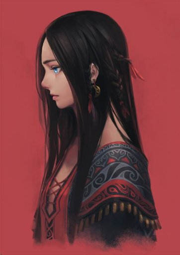
다르의 이름 없는 신의 두 번째 사도 · 1화 등장 · 7화 전사신과 기억을 잃었으나 신의 힘(예언)은 남은 예언자적 인물. 실체는 용병 아카라 피어스로, 조라에게 신성을 대부분 빼앗긴 신의 사도라 전투력은 거의 없는 대신 흘러든 조라의 힘 일부를 쓴다. 땅에서 라일락 가지나 곰 같은 생명을 “피워내는” 능력을 지녔고(이모 세런도 그가 피워낸 존재다), 이 능력을 쓸 때마다 영구히 약해진다. 오직 글리노어를 지키기 위해 살아왔다. 동쪽 호반 임무 중 진홍추적탄에 스쳐 죽으며 세런의 진실과 글리노어의 정체를 밝히고 사도를 넘긴다. “나는 아카라 피어스로서 죽겠습니다.”
아카라 피어스
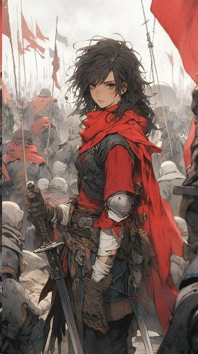
17년 전 너른들의 용병 · 피어의 본명 · 3화(회상·미스터리)검술이 뛰어나 부대원들의 신뢰가 두터웠고, 말수가 적으며 진지하고 술에 약했다. 어느 날 홀연히 자취를 감췄는데, 이것이 그가 이름 없는 신의 사도 피어가 된 순간이다. 그의 검은 훗날 레이피어가 쓰는 “아카라의 검”이 된다. 세레나 레이하트의 친구였고, 임신한 세레나를 대신해 일디르가 아닌 다르 이름 없는 신의 사도가 되었다.
글리노어 레이하트 → 레이피어
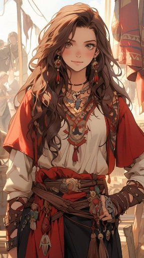
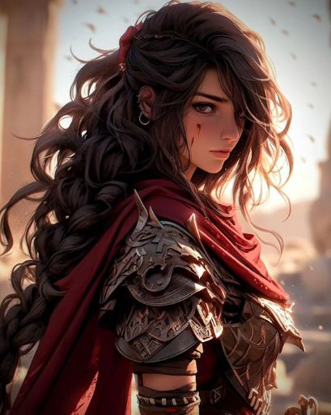
그래스월의 소녀 → 열 번째 사도(붉은 깃발의 사도) · 1화 등장 · 7화 각성이모 세런과 살던 그래스월의 소녀. 1화에 하루아침에 가족을 잃고 군단의 특수관계인(신병 지위지만 명령 복종 의무는 없음)이 된다. 인간 불신을 키우며 사도 계승을 완강히 거부하다, 7화에 자신이 태어나기 전부터 일디르의 사도였음을 알고 각성한다(일디르 사도 선정 의식이 3주 만에 중단된 이유가 바로 태아인 그였다). 다른 사도와 달리 원래 인격을 유지하며, 여름의 이미지(향기·별빛 머플러·붉은 궤적)를 두른다. 최종화에서 조라에게 살해되나 라하자르의 희생과 일레나의 개입으로 되살아나 조라를 벤다. 각성 주문은 “포스타니에”. “다시 반역의 불길을 올리겠어.”
슈레야
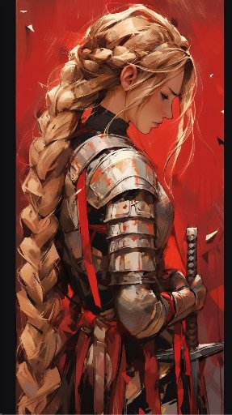
아스리카의 사도 · 전술 천재 · 3화 등장 · 바라크 광산에서 전사초자연적 전략 지성을 지닌 위압적 인물. 동부 국가들이 에텐마크 평원 공세를 편 것도 그의 계산이었다. 왜곡증에 걸린 군단병에게 “자비”를 베푸는 설정으로 유명하며, 이 때문에 이전 캠페인에서 사령관과 갈라섰다. 나시엘(엘레네사)의 옛 연인. 바라크 광산 깊은 갱도에서, 잿불의 왕이 타락시키려 했으나 거부하고 병사들을 구하려 무너지는 갱도에 몸을 던져 전사했다(9화 브리핑으로 보고됨).
조라
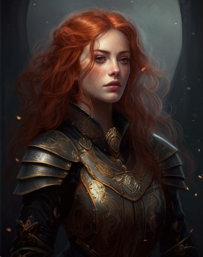
제먀의 살아계신 신의 사도(아홉 사도 중 하나) · 9화 등장 · 최종화 실질 최종 보스아주 오래 산 특수한 사도. 사람을 제물로 바치고 피를 마신 구 제국 마지막 황제를 죽였고, 그 참상을 보며 “신의 힘은 절멸되어야 한다”는 신념을 얻었다. 신들의 전쟁 막바지에 다르 군세와 사도 세히사를 쓰러뜨렸으나 이름을 몰라 완전히 죽이지 못했다. 친우 사도 오이싱그라의 목숨을 건 만류로 군단만은 살려두었다. 180여 년 뒤 잿불의 왕이 나타나기 직전 다시 등장해, 최종화에서 레이피어를 치하하는 척 불의 검으로 살해하고 군단마저 절멸시키려 한다. “인간에게 더는 사도가 필요 없다. 앞으로는 인간의 시대다.” 되살아난 레이피어와 진홍추적탄에 쓰러진다. (악한 존재가 아니라 신념이 뒤틀린 자로 그려진다.)
뿔 달린 자
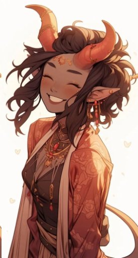
파냐 숲의 신(닉스)의 사도 · 사도 후보 · 훗날 변이자로 타락달의 여신 닉스가 타락해 달이 산산조각날 때, 소녀 “은색 춤 달빛”과 함께 복수를 꾀하며 옛 신전에서 사도로 선정됐다. 변신으로 적 전술을 염탐한 뒤 공격하며, 힘보다 지능으로 무리를 이끌었다. 파냐의 숲과 사람을 사랑해 언제까지고 숲을 지키리라 믿었으나, 분쇄자와 싸우다 타락해 변이자가 된다(아래 참조). 0화 사도 후보 넷 중 하나이기도 했다.
일레나
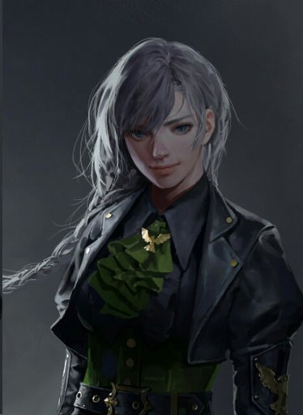
자비사 → 아스리카의 새 사도 · 최종화(10화) 등장타인의 고통을 자기 것으로 느끼는 능력을 타고나, 세상의 고통 총량을 줄이려 그것을 자기 안으로 흡수하는 자비사가 되었다. 이전 Long Shadow에서 슈레야와 임무 중 그의 죽음을 목격하고 쓰러졌다, 며칠간 주변의 아픔을 모두 흡수하며 깨어나 아스리카의 사도가 되었다. 사도가 된 뒤 성격이 극적으로 변해(친절·희생적 → 싸움을 즐기고 무례해짐) 큰 양손검을 들고 나타난다. 최종화에서 조라를 붙잡고 “당신이 돌아왔기 때문에 잿불의 왕이 나타난 것”이라는 반전을 폭로하며, 되살아난 레이피어를 조라에게 날려보낸다.
세히사 셀리만 → 잿불의 왕
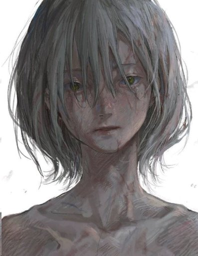
다르인 · 14세에 이름 없는 신의 사도 · 5화 등장 · 정체 = 잿불의 왕이름 없는 신이 다르를 위해 내려보낸 사도. 다르가 신들의 전쟁의 원흉으로 지목되자 다르 군세를 일으켰지만, 다른 사도들은 이를 “동부를 삼키려는 다르의 악마”로 선동했다. 조라에게 패해 쓰러졌으나 세히사도 그의 신도 끝내 이름을 밝히지 않아 조라의 신 죽이는 주문이 완성되지 못했다. 조라는 그가 보는 앞에서 다르인을 하나하나 죽이고 다르를 저주받은 땅으로 만들었다. 산산이 부서지면서도 이름을 말하지 않은 그는 죽지 않고 180년 뒤, 사도들이 그에게 뒤집어씌운 모든 악덕(기만·타락시키는 힘)을 스스로 지닌 채 돌아온다. 십첨관을 부수어 구첨관으로 만들며 잿불의 왕으로 다시 태어났다 — 조라에게 복수하기 위해. 이름은 “재(ashes)”의 애너그램이다. 최종화 에필로그에서 먼 산 위에서 결전을 지켜보다 돌아선다(전쟁은 미결로 남는다).
부서진 자 (타락자)
잿불의 왕에게 타락당한 사도들. 규칙상 한 캠페인에 사도 1 + 타락자 2를 쓰게 되어 있다.
나시엘, 왜곡자
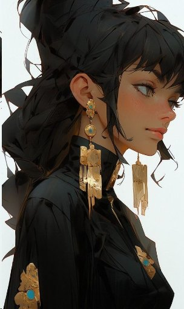
왜곡자 · 원래 오르 대기술(연금술)의 신의 사도 엘레네사 · 4화 등장화려한 옷을 입은 여성. 흑색탄 대량생산법을 고안했으나 타락하며 연금술 자체를 오염시켜, 이후 연금술은 쓸 때마다 부패를 감수하는 목숨을 건 기술이 되었다. 슈레야의 옛 연인으로, 슈레야가 죽은 뒤 잿불의 왕(세히사)에게 복수할 마음을 먹고 캠페인 내내 성물을 쫓으며 군단과 얽힌다. [핵심 반전] 9화에서 글리노어의 탄환(흑색탄 효과)이 나시엘의 뺨을 스쳤는데 아무 효과가 없었다 — 나시엘은 애초에 타락하지 않았으며, 어쩌면 아직도 사도다. 최종화 시점에 군세를 파열자에게 넘기고 잿불의 왕을 죽이러 떠난다.
분쇄자, 공허의 기사
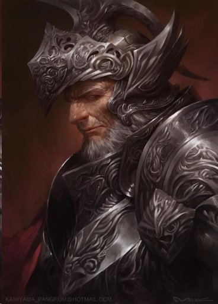
백골분쇄자 · 그을린 자 · 원래 사도 “휘황한 자 블라이심” · 캠페인 내 직접 등장 없음(언급만)타락자 중 육체의 힘이 제일. 원래 잿불의 왕을 죽이는 것이 사명인 사도였으나 타락했고, 잿불의 왕은 그에게 연금술을 능가하는 자원 “잿불피”의 비밀을 알려주었다. 타락 뒤 잿불의 왕을 여러 번 공격했지만 전혀 통하지 않음을 깨닫고 단념했다 — 그때 얼굴에 찍힌 손자국에서 아직도 연기가 난다. 뿔 달린 자를 타락시켜 변이자로 만든 장본인.
파열자, 날씨의 마녀
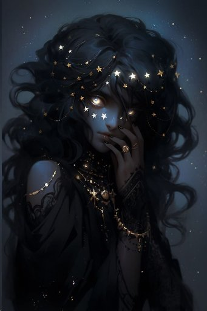
폭풍파열자 · 천둥을 부르는 자 · 원래 바르타 폭풍 여신 바자라의 사제 미니카 아리아 · 8화 등장저주와 흑마술을 직조하는 재주에 잿불의 왕조차 감탄한 타락자. 원래는 조용히 해안을 따라 여행하며 폭풍을 잠재우고 배를 지키던 소박한 사제였다. 설정상 특기는 벼락이지만 이번 캠페인에선 주로 감각 왜곡·환각을 썼다(칼리스코 요새 방어전). 악명병 벼락과 힐트가 모두 그 휘하다.
변이자, 수목의 파괴자
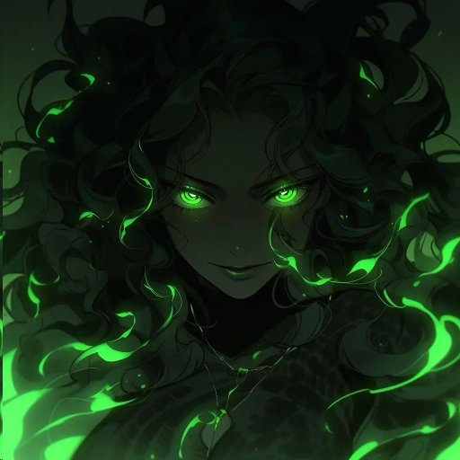
수목의 파괴자 · 타락한 뿔 달린 자 · 최종화 등장파냐의 숲을 지키려 분쇄자와 싸우다 타락한 뿔 달린 자의 말로. 사람을 사랑하고 장난을 즐기던 성격이, 인간을 기괴한 동물로 변신시키며 즐거워하는 가학적 성향으로 뒤바뀌었다. 언데드를 군단병이 기억하는 죽은 사람으로 — 말투까지 — 정확히 변신시키는데, 이는 군단병의 기억을 읽기 때문이다. 기억을 지우거나 심는 조작까지 가능하다. 그의 타락과 함께 파냐의 숲이 전부 불탔다.
악명병
생전의 지성을 되찾은 강력한 언데드 개체.
닥터, 악명 까마귀
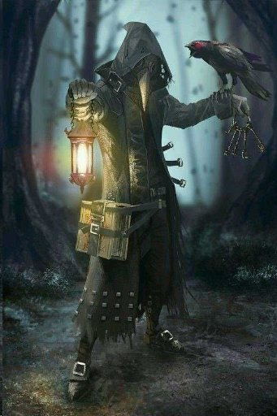
악명 까마귀 · 2화 등장(캠페인 첫 악명병)피로 손자국을 찍은, 뼈처럼 흰 가면을 쓴 개체. 썩은것과 흉물을 개조하는 실험을 하며, 아직 살아 있는 군단병에게서 뜯어낸 부위까지 사용한다. 캠페인 최초의 악명병으로, 힘겨운 2화의 주역이었다.
힐트, 악명 그림자 마녀
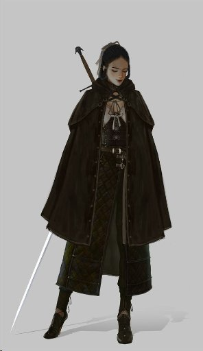
악명 그림자 마녀 · 파열자 휘하 · 6화 등장(첫 오리지널 악명병)아카라 피어스를 동경해 검술을 배운 동부 연합 검사였다. 강해지기 위해 많은 것을 방해로 여기며 살다, 파열자의 거짓 인질극에 속아 목숨을 잃었다. 이제 파열자 편에서 싸운다. “다시는 지지 않기 위하여. 이번에는 동료나 윤리 같은 방해되는 것 없이.”
벼락, 악명 낙뢰병
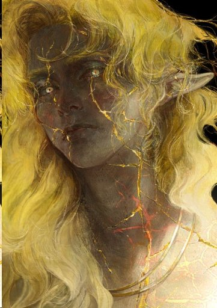
악명 낙뢰병 · 원래 파냐인 “금빛 넘실대는 벼락” · 7화 등장이상할 만큼 주변에 벼락이 잦던 파냐인. 여러 번 벼락을 맞고도 살아남았으나 그 피해에 지친 마을에서 추방당했고, 떠돌다 두레시 숲 주변에서 모두를 저주하며 죽었다. 시신마저 벼락을 불러 인근 낙뢰병 생산기지의 벼락이 줄어든 것을 흥미로워한 파열자에게 발탁돼 악명 낙뢰병이 됐다. “자신의 체질이 누군가에게는 도움이 되었으면” 하던 평생의 소원이, 하필 파열자에게 이루어진 아이러니의 존재.
루고스
태엽 자객(부관급) · 위험도 4 · 5화 소개 · 최종화 임무 E 등장
태엽을 감아 튕겨나가며 베는 태엽 자객. 5화에서 처음 소개되었고(프렙 단계), 최종화 제2파 방어(임무 E)에 실제로 부관으로 등장했다. (개별 초상 자료 없음.)
주요 인물
라하자르
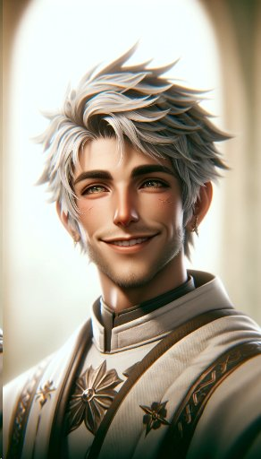
군단과 오래 함께한 자비사 · 다르인 · 3화 등장다르인이면서 아스리카의 자비사라는 이중 저주의 운명을 진 인물. 유쾌하고 신앙에 의심이 없다(드래곤 라자의 제레인트 침버가 모티브). 두 세션간 이름조차 없던 기능적 NPC로 시작해 임무에 동행하게 되고, 최종화에서 “자비사가 먼저 죽어야 대상이 산다”는 원리대로 자기 목숨을 바쳐 레이피어를 되살리는 핵심 역할을 한다. 다르 이름 없는 신의 “변화시키지 않는 사랑” 테마를 대변한다.
시퀀스
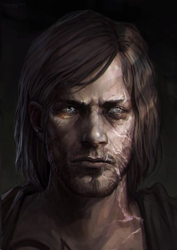
본명 에테르 마그누스 · 천재 연금술사 · 4화 등장 · 5화 구출천재라 불린 연금술사. 5화에서 구출되어 군단의 특수 보직으로 하늘화살 성채까지 동행하며, 라하자르의 마지막까지 함께한다.
세레나 레이하트
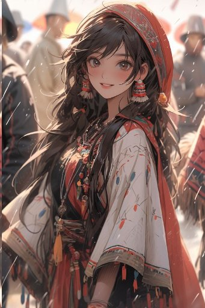
글리노어의 어머니 · 바르타인 · 3화(회상)글리노어를 출산하고 1년 뒤 언데드 습격으로 사망했다. 원래 일디르의 사도로 선정되었으나 임신 중이라 친구 아카라에게 대신 부탁했고, 그렇게 아카라가 다르 이름 없는 신의 사도 피어가 되었다. “봄처럼 친절하고 가을처럼 아름다웠다.”
세런 레이하트
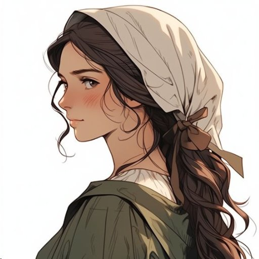
글리노어의 이모(로 알려진 존재) · 그래스월 거주 · 1화 등장실은 피어가 능력으로 피워낸 생명체다. 사람처럼 말하고 행동하며, 피어가 글리노어를 지키기 위해 만든 존재였다. 피어는 예언에서 그가 살인자로 보였기 때문에 1화에서 그를 직접 죽였고(이 능력을 쓴 대가로 영구히 약해졌다), 제대로 설명하지 않아 군단원들의 첫 불신을 샀다.
요나카스 사령관
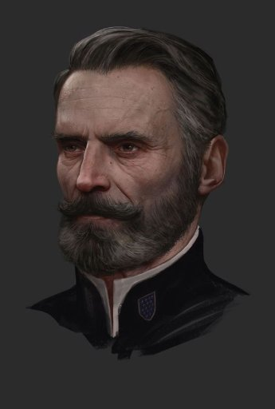
칼리스코 요새 사령관 · 8화 등장대타락 후 서부 호반 방어를 지휘해 막아낸 공훈으로 칼리스코 요새에 배속되어 보급·방어를 크게 개선했다. 말끝마다 쓸모없는 사실(반신욕을 좋아한다, 장이 안 좋아 화장실에 자주 간다 등)을 덧붙이는 버릇이 있다. 마르티네즈 후작을 후계로 지목한다.
마르티네즈 후작
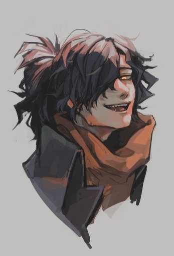
동부 연합군 제먀인 장교 32세 · 요나카스의 심복 · 최종화 등장바르타 사관학교를 졸업했고 척후병을 지망했으나 성적이 너무 좋아 주변 권유로 장교가 되었다(여전히 척후를 원한다). 요나카스의 지시로 하늘화살 성채 정찰을 위해 선발대로 먼저 파견되었고, 최종화 임무 B의 전투를 지원한다.
로프리오 후작
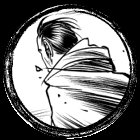
전 군단 사령관 · 바론 트레버의 은인 · 8화(환상)지휘관들의 반대에도 독단으로 어린 트레버의 재능을 알아보고 군단에 받아준 전 사령관. 병으로 사망했고 후임은 아르카나 라이오나다. 트레버가 저격수로 성장한 모습을 보지 못하고 죽었다. 최종화가 아닌 8화에 환상으로만 잠깐 등장한다.
팔카
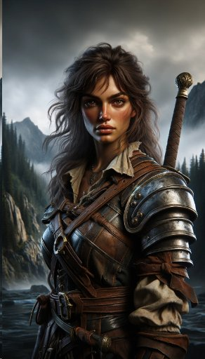
자칭 산적 여왕 · 서쪽 산맥 산채 · 4화 등장서쪽 산맥에서 산길을 장악하고 사람들을 습격하던 자칭 산적 여왕. 4화 습격 임무에서 군단과 얽히지만 살아남았고, 그 은혜로 최종화 임무 C에서 결정적으로 군단을 돕는다(“선의의 순환”의 대표 사례). 플레이어들이 유독 죽이고 싶어 했던 NPC이기도 하다.
차가
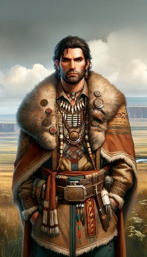
평야 부족 지도자 · 해걸음 야영지 리더 · 4화 등장해걸음 야영지를 이끄는 평야 부족의 지도자. (세션이 더 이어졌다면 팔카와 한때 연인이었다는 설정이 드러났을 예정이었다.)
서쪽 호반 세력
6화 서쪽 호반 도시에서 만나는 인물들. 후퇴하는 로드무비 특성상 대부분 한 번 스치지만 각자의 이야기를 그 안에서 완결한다.
카로지
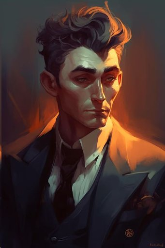
카로지 바르시아 · 서쪽 호반 시의회 의원 · 6화 등장성실하고 젠틀하며 주변에 친절하지만, 난민에 대해서만은 끝까지 단호하다(법적 보호는 주되 성 안에는 절대 들이지 않는다). 신념을 부보다 앞세워 오히려 부유하지 않다. 자신을 노린 암살 미수를 정치적 입지 강화의 기회로 삼아 난민 유입을 더 막았고, 결국 서쪽 호반이 언데드에 습격당했을 때 성 밖 난민 대부분이 죽었다. “카로지는 그런 사람인거죠.”
조
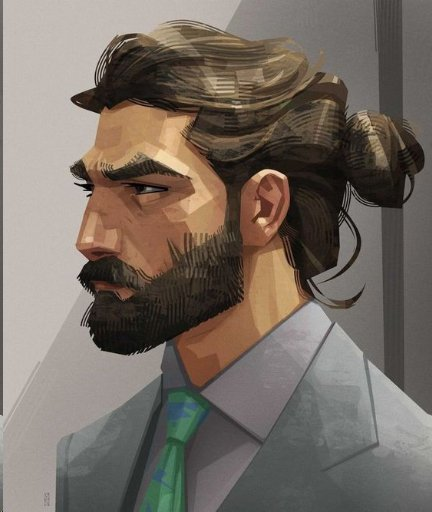
카로지의 수석 보좌관 겸 경호원 · 6화 등장카로지와 12년을 함께한 오랜 동료이자 신념을 공유한 사이. 카로지가 부유하지 않음을 잘 알기에 유혹을 이기지 못했고, 처음엔 손을 더럽히지 않으려 아무나 뽑아 쓰다 실패하자 직접 처리하기로 마음먹는다.
신프리 베이커
카로지의 보좌관 · 6화 등장
미술을 전공하다 그만두고 변호사 시험을 준비했으나 낙방한 뒤, 6개월 전 카로지에게 채용되었다. 카로지가 대신 감싸다 죽거나 그가 군단에 합류하는 분기가 준비되어 있었으나 어느 쪽도 실제로 일어나지 않았다.
바흐자릴
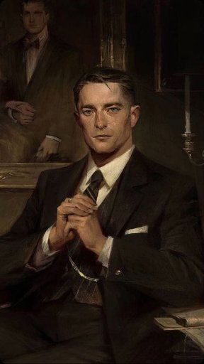
상인연합 스파크의 리더 · 6화 등장사람 목숨값을 재는 데 거리낌 없는, 이른바 “어둠칼스러운” NPC. 자기 길드의 픽서인 대즐링과 포인트블랭크를 제거하려 한다.
포인트블랭크
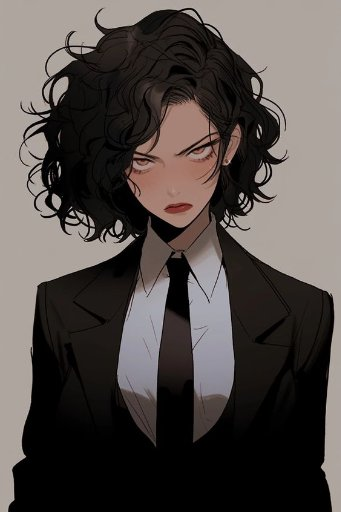
상인 길드 스파크의 픽서 · 6화 등장쉽게 짜증을 내는 픽서. 대즐링과 성격이 비슷하지만 서로 싫어해 사이가 나쁘다.
대즐링
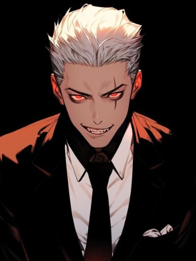
상인 길드 스파크의 픽서 · 6화 등장포인트블랭크와 앙숙인 픽서. 동쪽 호반으로 달아났으나 바흐자릴의 손아귀를 벗어나지 못해 몇 번 더 암살당할 뻔했고, 더 멀리 도망치기로 하며 하늘화살 성채 방면까지 흘러간다.
딜루젼
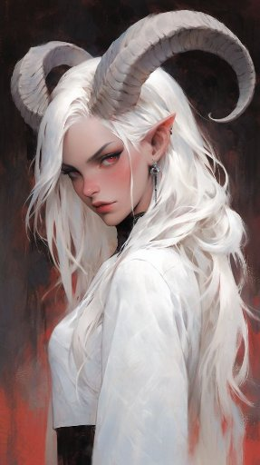
동쪽 호반의 실질적 지배자 · 파냐 출신(본명 불명) · 6화(언급)동쪽 호반을 사실상 지배하며 서쪽 호반으로 세력을 넓히려는 인물. 군단에 악감정은 없고 오직 자기 이익을 극대화하려 솔깃한 말을 건넨다. 몇 번 언급되었으나 진군 경로상 직접 대면하지는 못했다.
포레스트
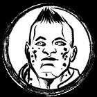
너른들의 일꾼 · 바르타인 · 3화 등장왜곡자에게 납치되어 일하다 3화에 군단의 소란을 틈타 탈출했다. 동쪽 호반에 정착하려다 이번엔 파열자에게 붙잡혀 공성병기를 만들다 또 탈출했고, “더는 잡히지 않겠다”는 의지로 하늘화살 성채까지 와 최종화 성벽 보강을 돕는다.
푸른 춤 철
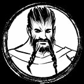
파냐 출신 일꾼 · 포레스트의 친구 · 3화 등장 · 최종화 전사너른들에서 포레스트와 친해져 한집 살이를 했다. 포레스트가 왜곡자에게 납치되자 구하러 몰래 잠입했다 함께 붙잡히기도 했다. 최종화에서 군단병들을 돕기 위해 하늘화살 성채까지 왔으나, 언데드 습격에 목숨을 잃는다 — 그를 돕는 군단병은 아무도 없었다.
리야
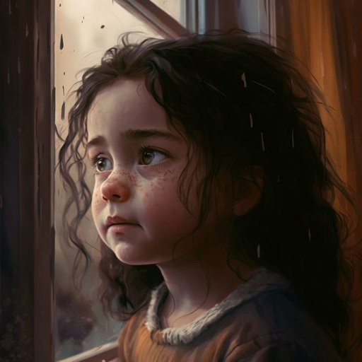
키타 데와의 딸 · 1세 · 8화(언급) · 언데드에게 살해됨키타 데와가 이제 막 “엄마”라는 말을 듣기 시작했던 한 살배기 딸. 언데드에게 살해되었고, 이 상실이 키타를 군단으로 이끌었다.
브라운
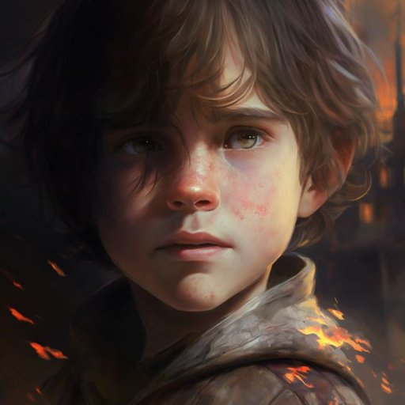
비넷의 조카(언니의 아들) · 12세 · 8화 등장비넷이 고향에 남겨두고 매일 그리워한 조카. 최종화에서 결국 이모 비넷을 잃는다. 마스터는 그에게 “이모는 정말 현명하고 용감했다”고 전하고 싶다는 코멘터리를 남겼다.
토로스
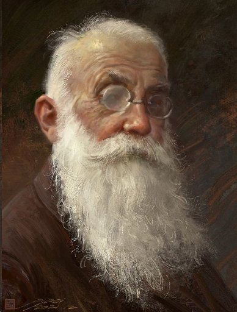
그래스월 마을의 농장주 · 1화 등장캠페인에서 군단 밖에서 처음 마주친, 이름 있는 최초의 NPC라는 기념비적 존재. 이상한 소리의 재채기, 조카가 사준 안경 자랑 같은 소소한 등장을 했다.
스베레나 알리코브나
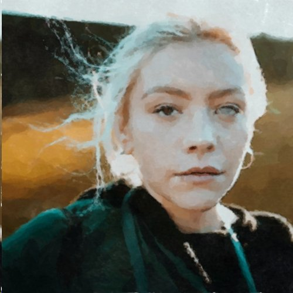
저격수 · 이전 Long Shadow의 PC 군단병(직스) · 3화 등장한쪽 눈에 의안을 한 저격수. 자신의 능력에 무한한 믿음을 가졌다. 미완으로 끝난 이전 캠페인 Long Shadow의 PC였던 인물이 이번엔 NPC로 등장해, 슈레야와 함께 임무·전투에 반복 동행한다.
황금빛 타오르는 눈보라
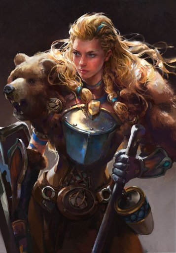
중전사 · 이전 Long Shadow의 PC 군단병(오랑시) · 3화 등장190cm 장신에 근육질 거구인 파냐인 여성 중전사. 취미는 근력운동, 특기는 곰 사냥. 역시 Long Shadow의 PC였던 인물로, 8화 칼리스코 요새 방어전에서 대규모 부대를 지휘한다.
오이싱그라
조라의 친우 사도 · [프렙만] (바라크 광산 루트)
조라에게 군단만은 살려달라 목숨을 걸고 만류했던 친우 사도. 아직 살아 있으나 미쳐버렸으며, 이번에 가지 않은 바라크 광산 루트에서 만날 수 있었을 인물이다. 최종화에서 일레나가 조라에게 “오이싱그라가 틀렸다”는 조라의 선언을 정면으로 반박하는 데서 그 이름이 되살아난다. (개별 초상 자료 없음.)